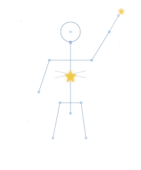

V1 — Full figure

Transparent bg, light palette. Works on warm white homepage.
V2 — Circular frame
Astronomical atlas circle. Clean logo proportions.
V3 — Dark icon
Dark bg, gold-forward. Works as app icon, favicon, or hero element.
V3 on light
How V3 looks on the current warm homepage bg.